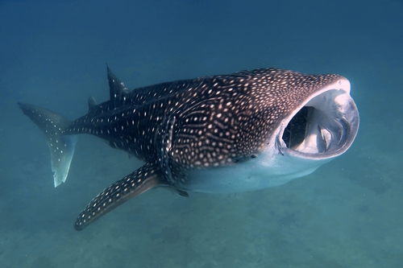
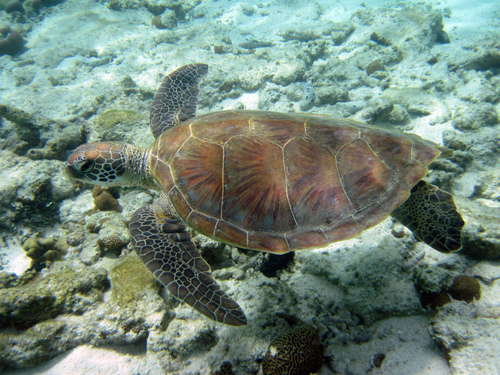
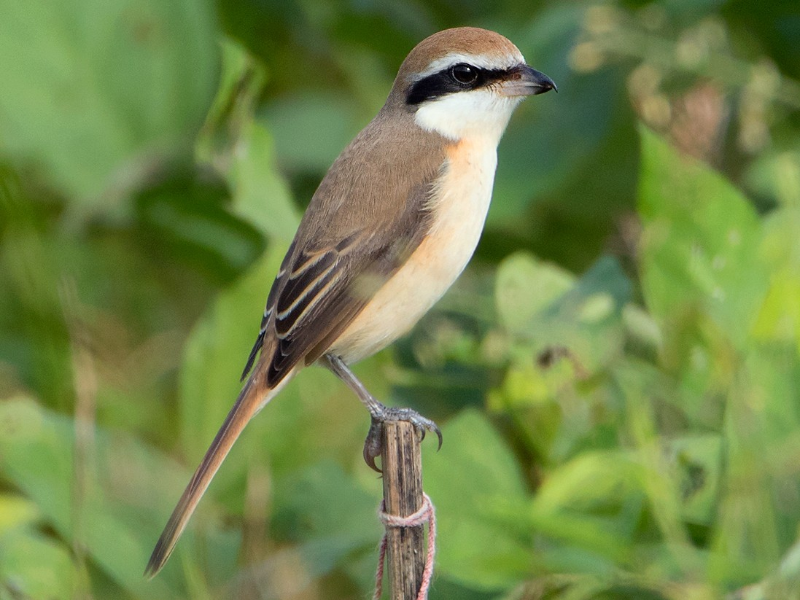
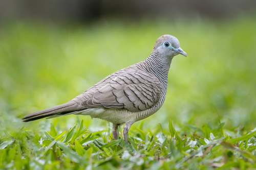
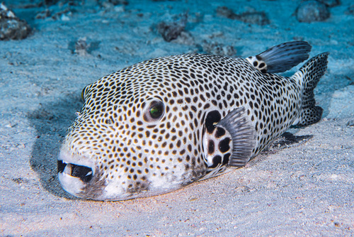

| Animal Name | Species | Lives in | Image |
|---|---|---|---|
| Whale shark | Rhincodon typus | Tropical and warm-temperate seas |  |
| Green sea turtle | Chelonia mydas | Tropical and subtropical oceans |  |
| Brown shrike | Lanius cristatus | Brushy thickets, forest edges, vegetated riparian areas, and forest clearings |  |
| Zebra dove | Geopelia striata | Scrub, farmland, and open country in lowland areas |  |
| Starry puffer | Arothron stellatus | External reef slopes and sheltered lagoons with clear water |  |